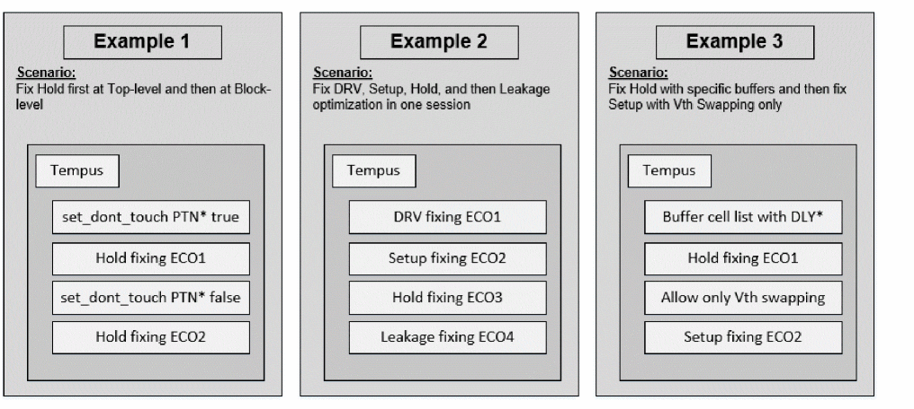

Basic Signoff ECO Optimization Techniques
Tempus ECO can optimize timing/DRV/Leakage/Area/Hold/Power/Setup. The main command to perform those different optimizations is eco_opt_design and you can select the targeted optimization using the following options:
eco_opt_design [-area] [-drv] [-dynamic] [-hold] [-leakage] [-power] [-setup]
This command will generate the eco_innovus.tcl file to be used in Innovus for place and route. It also generates the eco_tempus.tcl file, which can be sourced in Tempus to perform timing analysis after ECOs. Each optimization engine always ensures no new violations. For example, when fixing Setup timing, the tool ensures no new DRV/Hold violations, and when fixing Hold timing, it ensures no new DRV/Setup violations. This is the key to ensure good timing convergence in a minimum of ECO loops.
Notes before running eco_opt_design:
-
It is mandatory to provide parasitic before running
eco_opt_design. The syntax below shows how to load the SPEF files for every active RC corner:read_spef -rc_corner rc_max max.spef.gz read_spef -rc_corner rc_min1 min1.spef.gz read_spef -rc_corner rc_min2 min2.spef.gz
To perform SI analysis/fixing, SPEF must contain the coupling capacitance data. -
All timing derates, AOCV tables, delay calculation settings, and CTE global variables must also be provided before running the
eco_opt_designsince those will have the timing updates done during ECO fixing. -
It is important to correctly set up the timing environment and multi-CPU settings before running
eco_opt_designto avail the benefit of DMMMC timing analysis and multi-threading during timing/leakage/area optimization. -
In case there are filler cells in the design,
eco_opt_designwill automatically delete them at the start. To implement this, it is mandatory to specify the filler cells that need to be removed by using the commandset_filler_mode.
By default, eco_opt_design will use buffering/resizing/swapping techniques to improve timing/DRC/Leakage/Area. For Setup timing closure, eco_opt_design can also insert pairs of inverters. Additionally, sequential elements can also be sized by enabling set_eco_opt_mode -optimize_sequential_cells true and buffer deletion can be enabled during area recovery by enabling set_eco_opt_mode –delete_inst true.
eco_opt_design –holdThis will perform Hold fixing by using Vth swapping, buffering, and resizing techniques on the combinational cells.
set_eco_opt_mode –optimize_sequential_cells true
eco_opt_design –leakage
This will perform Leakage recovery by using Vth swapping technique on both the combinational and sequential cells.
set_eco_opt_mode –delete_inst true
eco_opt_design –area
This will perform Area recovery by downsizing both the combination and sequential cells in addition to buffer removal.
At the signoff stage, you can optimize all remaining violations, such as DRV, Setup, and Hold, and also recover Power or Area when needed. This can be achieved in one single Tempus session using the incremental optimization feature enabled with set_eco_opt_mode -allow_multiple_incremental true.

Notes about incremental optimization are as follows:
The recommended flow is the one described in Example 2 above. In case area optimization is needed, it should be called as the first flow step.
Note that if more Tempus ECOs are done in a session, then more routing changes will be needed when implementing those ECOs, and therefore the risk of timing degradation.
Each optimization step will output an ECO file, so in order to avoid overwriting the previous one, you should apply a unique prefix for each with the set_eco_opt_mode -eco_file_prefix prefixNameoption.
set_eco_opt_mode –load_eco_opt_db ECOdb
set_eco_opt_mode –allow_multiple_incremental true
set_eco_opt_mode -eco_file_prefix DRV_FIX
eco_opt_design –drv
set_eco_opt_mode -eco_file_prefix HOLD_FIX
eco_opt_design -hold
This will perform DRV fixing followed by Hold fixing, while giving a different prefix for the ECO files.
Related Topics
- Signoff ECO Overview
- Key Features of Signoff ECO
- Signoff ECO Flow
- Setting Up Signoff ECO Environment
- Signoff Optimization Use Models
Return to top